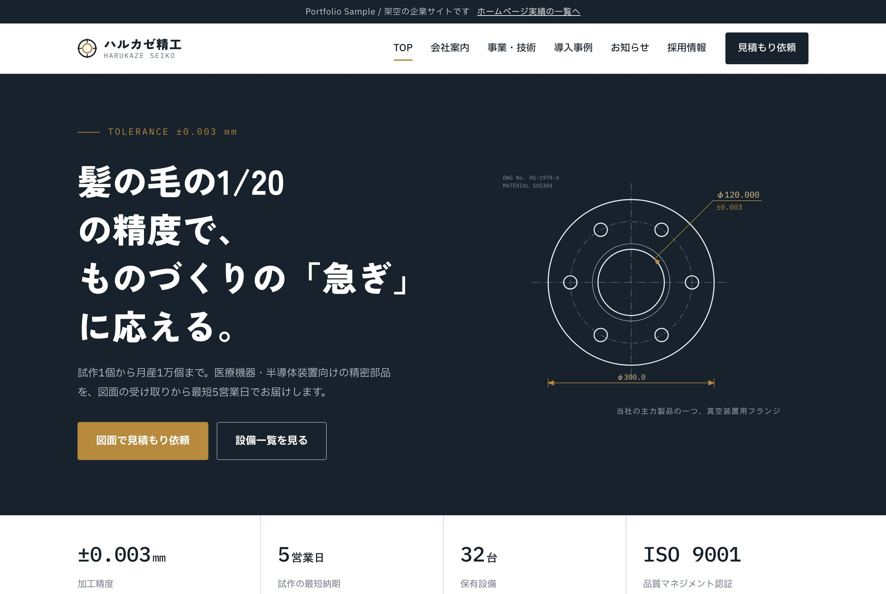

LANDING PAGE · 8作品
LP実績
美容・士業・飲食など7業種のLPと、Before/Afterで見せる改善事例。1ページで申し込み・予約につなげる構成です。
LP実績の一覧へ →
WEBSITE · 2作品
ホームページ実績
会社案内・事業紹介・採用・お問い合わせまでそろえた、複数ページで構成する会社のホームページと、お店側で更新できるWordPressサイトです。
ホームページ実績の一覧へ →受注に向けた実績づくりとして制作した、架空の企業・サービスのサンプル集です。見たい種類を選んでください。
※ いずれも架空のサービス・企業を題材にしたポートフォリオ用サンプルであり、実在の団体・人物とは関係ありません。
美容・士業・飲食など7業種のLPと、Before/Afterで見せる改善事例。1ページで申し込み・予約につなげる構成です。
LP実績の一覧へ →
会社案内・事業紹介・採用・お問い合わせまでそろえた、複数ページで構成する会社のホームページと、お店側で更新できるWordPressサイトです。
ホームページ実績の一覧へ →